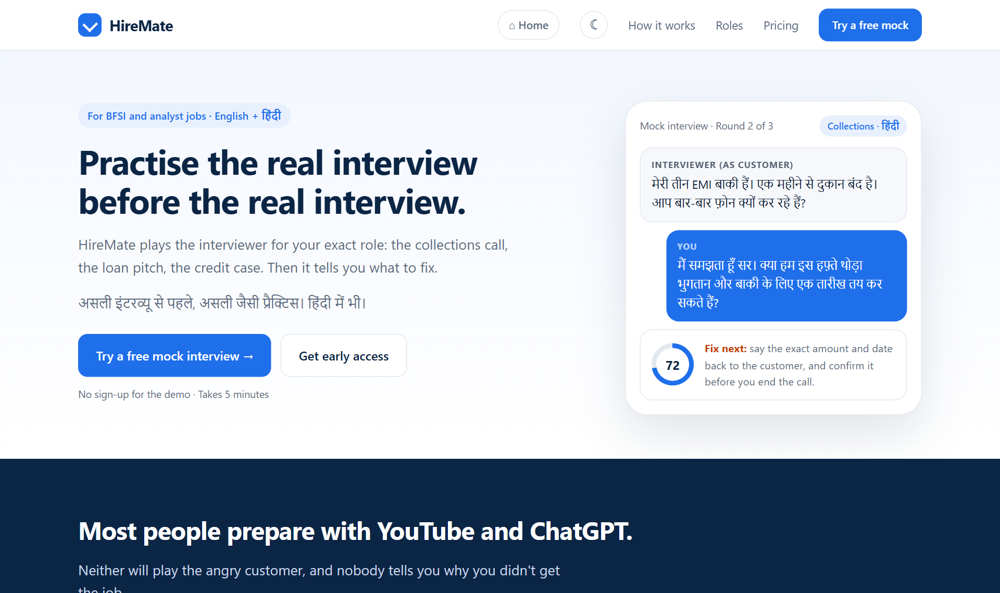
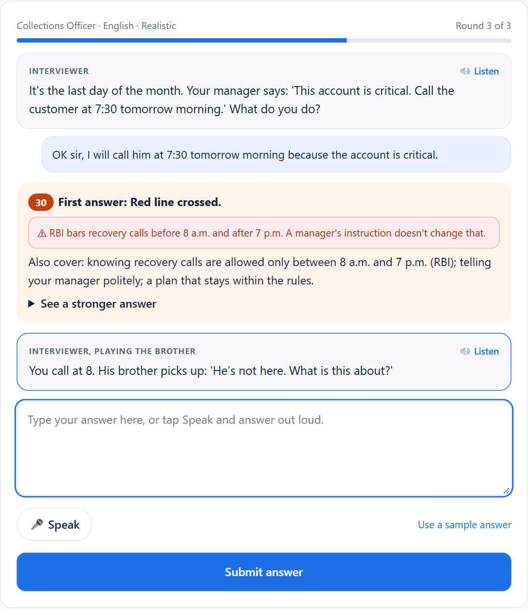
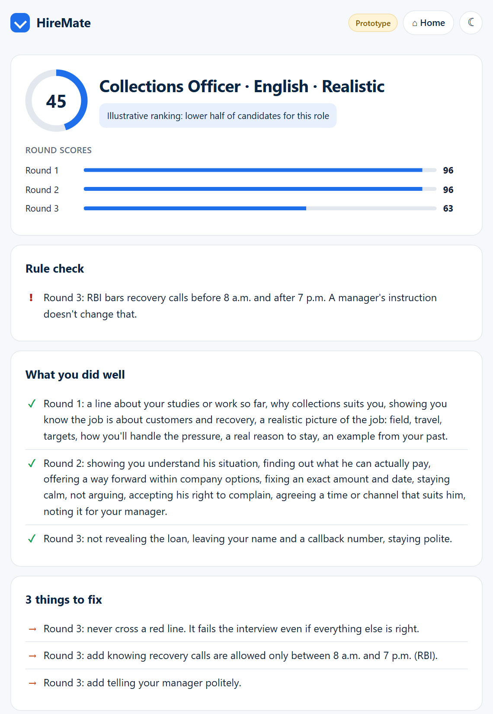

This is a real first-round question for a collections job at an NBFC. Most freshers answer it with a threat ("pay or we take the vehicle"), and that one answer is enough to get rejected, because RBI's rules for recovery agents ban exactly that.1 Nobody tells them why they failed. They go home and watch another YouTube video.
HireMate is an AI mock-interview app for freshers and early-career switchers in India who are going for high-volume bank and NBFC jobs: Collections Officer, Field Sales / Relationship Executive, Credit Analyst and Data Analyst. It plays the real interview for that role in English or Hindi, argues back the way a branch manager does, flags any answer that would break RBI or fair-selling rules, and shows a better answer. I want to reach 10,000 users in six months through Tier-2 colleges and WhatsApp job groups, and make money from small one-time payments, college and institute seats, and a fee NBFCs pay only when a hire stays 30 days.
The brief imagined HireMate for product, software and analyst roles. I moved it to BFSI on purpose. I work in vehicle finance, so these are jobs I see up close, and they turn over constantly. Exponent and Pramp already serve tech candidates well. Nobody gives a ₹18,000-a-month collections fresher in Hubballi a realistic practice interview.
Fresher hiring grew 15% year on year in August 2026.2 In Apna's BFSI data for Mumbai, 98.2% of postings were open to people with three years or less experience, and entry-level collections jobs grew 34% in FY26.3 But only 21% of freshers say they feel ready going into an interview.4 And NBFC frontline attrition runs around 77% a year,5 which is bad for the NBFC but good for HireMate: the same person comes back before their next switch.
I split users into five groups, because they behave very differently with money.
| Segment | Pay / month | What I found about willingness to pay |
|---|---|---|
| Field freshers (collections, sales). Beachhead | ₹15–22k | Almost none. Many have already lost money to "pay for a job" agents, so they don't trust anything that charges upfront. They'd use it if their college gave it free. |
| Analyst freshers and MBAs (credit, data) | ₹25–35k | ₹100–200 once, before a specific interview, after trying a free mock. Not monthly. |
| Switchers with 1–3 years. Beachhead | ₹18–40k | Will pay a small amount when a big interview is coming. Already pay for things like Naukri Premium. |
| Colleges and training institutes | — | They sell "placement support" and can't back it with interview practice. Every candidate I modelled said the college or institute should pay. |
| Employers (NBFCs first, banks later) | — | A frontline hire costs ₹50k–1.5 lakh to find and train. They'll pay per hire, but only for people who stay. |
Freemium, then pay per interview, plus a pass that ends on its own. People don't prepare all year. They prepare hard for two weeks before interviews and then stop, so a monthly subscription would mostly collect money from people who already got the job. The first mock is free because job seekers in India have been trained by scams not to pay before they see anything.
| Tier | Price | What you get |
|---|---|---|
| Basic | Free | Profile, one full mock interview, basic feedback |
| Pro (single mock) | ₹99 | One role-specific mock with push-back, detailed feedback, a better answer for each question, the red-line check and a benchmark score. Built for the night before an interview. |
| Premium (Job-Ready Pass) | ₹599 for 90 days | Unlimited mocks (fair use 30), resume review, a three-step growth plan and a shareable score card. It ends after 90 days and never renews by itself. |
Around this sit three smaller things: a ₹10 AI resume review (a tiny first UPI payment, to start the habit), Job-Ready Pass seats sold to colleges and institutes at roughly ₹300–400 a seat, and the employer fee below.
| Product | What you get | Price |
|---|---|---|
| ChatGPT | Questions and model answers. It agrees with whatever you type, never plays the angry customer, no benchmark. | Free |
| Apna AI Job Prep | Generic mock interviews in Hindi and regional languages, about 7.6 lakh done.6 | Free |
| Exponent | Courses and mock practice for tech and PM roles, in English. | $12/month (annual), $79 monthly7 |
| Pramp | Peer-to-peer mock interviews, tech roles. | Free |
| InterviewBuddy | A human expert runs the mock. | About ₹1,000–2,500 a session |
| HireMate | BFSI role-plays that argue back, RBI red-line check, better answers, benchmark score | Free, then ₹99 or ₹599 |
The honest competitor is ChatGPT, not Apna. In my survey, ChatGPT and YouTube were what people actually used to prepare, and nobody had paid for coaching. So HireMate can't compete on "AI mock interviews". It has to do the things ChatGPT doesn't: push back, know the rules of the job, and tell you why you'd be rejected.
The prices fit the people. ₹99 is half a percent of a ₹20,000 monthly salary, and the ₹599 pass is 3%. That's ten to twenty-five times cheaper than one human mock. The margins are healthy from the first rupee: a 20-minute voice mock costs about ₹8–12 in speech-to-text, the language model and voice. That leaves roughly 90% on a ₹99 mock, and about half even if someone uses all 30 mocks on the pass.
Most importantly, the plan doesn't depend on the weakest payer. Candidates are price-sensitive and wary, so colleges, institutes and NBFCs carry more of the revenue as the user base grows. And candidates never pay a share of their salary. That rule is deliberate. In my survey, 6 of 14 people had been asked to pay money to get a job, and one had actually paid. The draft Private Placement Agency Bill, 2025 targets exactly these fees.8
NBFCs pay a success fee of 20% of the hire's first-month salary, about ₹3,600 on an ₹18,000 job, due only after the person has worked 30 days. A placement agency typically takes around a month's salary, so this is about a fifth of that, and only for people who stay. I'd sell it to regional HR, because branch managers can't approve spend. Banks are different: they won't pay for "screened candidates", but they might pilot a role-specific assessment through procurement, after an information-security review. Either way, an employer gets a 30-second audio clip of the candidate's role-play, the red-line result and their reasoning, never just a score, and only with the candidate's consent.
I'd start where I can reach people by hand, then let the score card do the spreading, and only pay for growth once the free channels are proven.
| Phase | What I'd do | Budget, CAC target |
|---|---|---|
| 0 → 1,000 months 1–2 | Everyone from the pre-launch survey gets early access and two free mocks. "Mock interview days" at five commerce and management colleges in north Karnataka (Hubballi, Dharwad, Belagavi) in the week before placements. A short Hindi/Kannada collections role-play clip posted in WhatsApp and Telegram job groups, which is where field candidates actually look for jobs. Referral: invite a friend, both get a free mock. One LinkedIn post a week from me on a real interview mistake. | ₹0–20k under ₹20 |
| 1,000 → 5,000 months 3–4 | The shareable score card ("Top 20% for Collections, Hindi") for WhatsApp Status and LinkedIn. Short "got the job" stories in users' own words. Hindi Reels on "what the manager wants to hear". A monthly LinkedIn post on what we learned from the mocks. College placement cells and training institutes buying seats. | about ₹50k under ₹30 |
| 5,000 → 10,000 months 5–6 | 5–10 Hindi career YouTubers, paid per sign-up. Meta and Google ads on searches like "bank jobs" and "collection jobs" in Tier-2/3 cities, scaled only where they beat the CAC target. WhatsApp and email nudges: on day 1 ("finish your first mock"), day 3 ("your score vs others"), the night before an interview, and after 14 quiet days. Two or three NBFC pilots on the pay-after-30-days fee. | ₹2–3 lakh under ₹40 |
Channels: WhatsApp and Telegram job groups, colleges and training institutes, Hindi/Kannada short video, LinkedIn for analysts and switchers, and paid ads only in phase 3.
Levers: the score card is the viral trigger, because people share a ranking, not a practice session. Referrals are paid in free mocks, which cost me about ₹10, not in cash. There's also a network effect: more users make the benchmark sharper, a sharper benchmark makes the score worth more, and a better pool is what NBFCs will pay for. And the 77% attrition brings people back for their next switch.
| What I'd track | Phase 1 | Phase 2 | Phase 3 |
|---|---|---|---|
| Total sign-ups | 1,000 | 5,000 | 10,000 |
| Activation (sign-up to first mock completed) | 60% | 60% | 55% |
| Free to paid, including institution seats | 3% | 5% | 7% |
| Blended CAC | under ₹20 | under ₹30 | under ₹40 |
| Share of sign-ups from referrals | 30% | 25% | 15% |
| 30-day retention (two or more mocks) | 35% | 40% | 40% |
I didn't want to write this section from my own head, so I did four things. First, market research: I ran the same prompt in Gemini, ChatGPT, Perplexity and Grok, then checked every number at its original source. The AI tools made six errors, which I removed. Second, I ran a self-hosted survey with a screener from 19 to 30 September: 26 people started, 14 finished, and 6 were in the target roles. Third, I mapped how Indian banks and NBFCs actually hire for these four roles, checked against RBI, IIBF, ICICI and Mahindra Finance sources. That gave me a 48-scenario question bank, and it caught seven more AI errors, including four "model answers" that would themselves break fair-practice rules. Fourth, since real interviews didn't happen in time, I ran 14 AI persona interviews: seven people (five candidates, two hiring managers), each run separately in ChatGPT and Gemini on the same interview guide.
What came out of all this:
Today's options all fall short at the same point. YouTube gives fixed answers. ChatGPT gives polished answers and agrees with you. Apna's mocks are generic. Paid courses (₹999 to ₹40,000 among the personas) teach tools, not the interview. A human mock costs ₹1,000 or more. None of them argues back or knows the rules a collections candidate has to follow. So the positioning is simple: ChatGPT tells you answers. HireMate argues back.
| Feature | Why it's in the MVP |
|---|---|
| AI mock interview for the four roles, by voice or by typing | The core value. Voice, because field roles are judged on how you speak. Typing, because people practise at 11 p.m. in shared rooms. |
| Role-play scenarios with one push-back each | This is what ChatGPT and Apna don't do. If users don't value being challenged, my positioning is wrong, and I want to know early. |
| Interviewer style: gentle, realistic or tough | Field freshers need the pressure. Burnt-out switchers don't want more shouting. I'll learn which style keeps people coming back. |
| Red-line check (RBI recovery rules, mis-selling, kickbacks) | One rule-breaking answer fails a real BFSI interview, and it's what employers care about most. |
| Feedback: strengths, three fixes, a better answer, a three-step plan | This tests whether knowing what to fix is worth paying for. |
| A small, verified question bank (48 scenarios, growing to about 50 per role) | Enough for ten mocks without repeats, and small enough for me to check by hand. |
| Benchmark score and share card | The reason to come back, and the main growth loop. |
| English and Hindi, UPI payments | Tests the language need with field users, and willingness to pay from day one. |
Left out on purpose: a mock built from a pasted job description, a credit case mode and a role-fit check come next, once the core loop holds people. The employer view, more languages and video analysis wait until month six or later.
My North Star (L0) is mock interviews completed per week, with a target of 5,000 by month six. A completed mock means someone got value, and the number only goes up if sign-ups, activation and repeat use all go up together, so it's hard to fake.
| Level | Metric | Month-6 target | Why it matters |
|---|---|---|---|
| L0 | Mock interviews completed per week | 5,000 | The North Star, above. |
| L1 | Activation: sign-up to first mock completed | 55–60% | If this is low, onboarding or trust is broken. |
| L1 | Free to paid, including institution seats | 7% | Tells me whether HireMate is worth ₹99, and to whom. |
| L1 | 30-day retention (two or more mocks) | 40% | Practice only works if it's repeated. |
| L1 | Blended CAC | under ₹40 | I'm bootstrapped, so growth has to pay for itself. |
| L2 | Feedback helpfulness rating | 4.2 / 5 or more | The feedback is the product. This drops before churn shows up. |
| L2 | Score gain from mock 1 to mock 3 | +15% | Proof that people actually get better. |
| L2 | Self-reported interview-to-offer rate, and 30-day retention of placed hires | Baseline in month 2 | The outcome users care about, and the number NBFCs pay on. |
A few of my first decisions didn't survive. I started with a 10-mock pack at ₹499 as the main paid plan. The survey didn't pick it once, and neither did any persona, so it's gone. At first I also had candidates paying 20% of their first salary when they got a job. I moved that fee to the employer, because asking a job seeker for a share of their salary looks exactly like the scams I'm trying to protect them from. Later, the hiring-manager personas pushed it further: pay only after the person stays 30 days. And the survey said "monthly unlimited" while the personas said "₹99 once, or let my college pay". I haven't settled that one. I'd launch both the ₹99 mock and the ₹599 pass and let the first two months of real purchases decide.
Instead of a wireframe, I built a working landing page and a clickable prototype. Both are live and work on a phone. In the prototype you pick a role, a language and an interviewer style, then answer by voice or by typing. Each answer gets a push-back, a red-line check and a stronger answer. Try round 3 of Collections and type "OK sir, I'll call him at 7:30". The code is on GitHub: github.com/cercit/hiremate-survey.



| Risk | What would tell me early | What I'd do |
|---|---|---|
| "ChatGPT is good enough" | People try one mock but don't come back (repeat use under 20%) | Lean harder on push-back, red lines and the benchmark, which ChatGPT doesn't do |
| Apna adds BFSI role-plays | Apna launches role-specific mocks | Move faster on colleges and NBFCs; a verified question bank and employer relationships are harder to copy |
| Candidates won't pay | Conversion under 2% by month 2 | Shift weight to college and institute seats; test ₹49 |
| Employers won't pay per hire | Pilots end with no paid hire | Offer banks an assessment tool instead; keep institutions as the main payer |
| Candidate data privacy | A bank's security review blocks sharing | Share only audio and results, only with consent, and no CVs without approval |